Objects for representing MCMC output.
Usage
mcmcarray(data = NA, dim = length(data), dimnames = NULL, iteration = length(dim), chain = NA, name = "mcmcarray", lower = NULL, upper = NULL)is.mcmcarray(object)is.mcmcarray.list(object)"biips_summary"(object, probs = c(), order = ifelse(mode, 0, 1), mode = all(object == as.integer(object)), ...)"biips_summary"(object, ...)"biips_table"(x, ...)"biips_density"(x, bw = "nrd0", ...)biips_hist(x, ...)"biips_hist"(x, main = NULL, xlab = NULL, ...)"biips_table"(x, ...)"biips_density"(x, bw = "nrd0", ...)"biips_hist"(x, main = NULL, xlab = NULL, ...)"summary"(object, ...)"summary"(object, ...)"density"(x, ...)"density"(x, ...)"hist"(x, ...)"hist"(x, ...)
Arguments
- data
- numerical vector
- dim
- vector of integers. dimension of the array
- dimnames
- character vector
- iteration
- integer. index of the dimension corresponding to iterations of the MCMC.
- chain
- integer. index of the dimension corresponding to chain of the MCMC.
- name
- string. variable name
- lower
- vector of integers. variable lower bound
- upper
- vector of integers. variable upper bound
- object,x
- a
mcmcarrayormcmcarray.listobject. - probs
- vector of reals. probability levels in ]0,1[ for quantiles.
(default =
c()) - order
- integer. Moment statistics of order below or equal to
orderare returned. (default = 0 if all the components are discrete variables and 1 otherwise) - mode
- logical. Activate computation of the mode, i.e. the most
frequent value among the particles. (default =
TRUEif all the components are discrete variables andFALSEotherwise) - ...
- additional arguments to be passed to the default methods. See
density,hist,table - bw
- either a real with the smoothing bandwidth to be used or a string
giving a rule to choose the bandwidth. See
bw.nrd. (default='nrd0') - main,xlab
- plotting parameters with useful defaults.
Value
-
The methods apply identically to
- mean
- mean, if
order>=1. - var
- variance, if
order>=2. - skew
- skewness, if
order>=3. - kurt
- kurtosis, if
order>=4. - probs
- vector of quantile probabilities.
- quant
- list of quantile values, if
probsis not empty. - mode
- most frequent values for discrete components.
mcmcarray or
mcmcarray.list objects and return a named list with the same named
members as the input object.
The mcmcarray function returns an object of class mcmcarray.
The function is.mcmcarray returns TRUE if the object is
of class mcmcarray.
The function is.mcmcarray.list returns TRUE if the
object is of class mcmcarray.list.
The method biips_summary returns univariate marginal
statistics. The output innermost members are objects of class
summary.mcmcarray, i.e. lists with members:
The method biips_table returns univariate marginal frequency
tables or probability mass estimates of discrete variables. The output
innermost members are objects of class table.mcmcarray.
The method biips_density returns univariate marginal kernel
density estimates. The output innermost members are objects of class
density.mcmcarray.
The method summary is an alias for biips_summary.
The method density is an alias for biips_density.
The method hist is an alias for biips_hist.
Description
A mcmcarray object is returned by the
biips_pimh_samples or biips_pmmh_samples
functions to represent MCMC output of a given variable.
A mcmcarray.list object is a named list of mcmcarray objects
for different monitored variables.
The methods apply identically to mcmcarray or mcmcarray.list
objects and return a named list with the same named members as the input
object.
Examples
modelfile <- system.file('extdata', 'hmm.bug', package = 'Rbiips') stopifnot(nchar(modelfile) > 0) cat(readLines(modelfile), sep = '\n')var c_true[tmax], x_true[tmax], c[tmax], x[tmax], y[tmax] data { x_true[1] ~ dnorm(0, 1/5) y[1] ~ dnorm(x_true[1], exp(logtau_true)) for (t in 2:tmax) { c_true[t] ~ dcat(p) x_true[t] ~ dnorm(0.5*x_true[t-1]+25*x_true[t-1]/(1+x_true[t-1]^2)+8*cos(1.2*(t-1)), ifelse(c_true[t]==1, 1/10, 1/100)) y[t] ~ dnorm(x_true[t]/4, exp(logtau_true)) } } model { logtau ~ dunif(-3, 3) x[1] ~ dnorm(0, 1/5) y[1] ~ dnorm(x[1], exp(logtau)) for (t in 2:tmax) { c[t] ~ dcat(p) x[t] ~ dnorm(0.5*x[t-1]+25*x[t-1]/(1+x[t-1]^2)+8*cos(1.2*(t-1)), ifelse(c[t]==1, 1/10, 1/100)) y[t] ~ dnorm(x[t]/4, exp(logtau)) } }#' # PIMH algorithm data <- list(tmax = 10, p = c(.5, .5), logtau_true = log(1), logtau = log(1)) model <- biips_model(modelfile, data, sample_data = TRUE)* Parsing model in: /home/adrien-alea/workspace/biips-git/Rbiips/inst/extdata/hmm.bug * Compiling data graph Declaring variables Resolving undeclared variables Allocating nodes Graph size: 169 Sampling data Reading data back into data table * Compiling model graph Declaring variables Resolving undeclared variables Allocating nodes Graph size: 180n_part <- 50 obj_pimh <- biips_pimh_init(model, c('x', 'c[2:10]')) # Initialize* Initializing PIMHout_pimh_burn <- biips_pimh_update(obj_pimh, 100, n_part) # Burn-in* Updating PIMH with 50 particles |--------------------------------------------------| 100% |**************************************************| 100 iterations in 0.41 sout_pimh <- biips_pimh_samples(obj_pimh, 100, n_part) # Samples* Generating PIMH samples with 50 particles |--------------------------------------------------| 100% |**************************************************| 100 iterations in 0.41 s#' Manipulate `mcmcarray.list` object is.mcmcarray.list(out_pimh)[1] TRUEnames(out_pimh)[1] "log_marg_like" "x" "c[2:10]"out_pimhx mcmcarray: $mean [1] 3.7658240 9.9744222 3.5036537 1.4315588 15.3733341 17.0442690 12.0612049 -0.5226016 -22.1609710 -2.7569786 Marginalizing over: iteration(100) c[2:10] mcmcarray: $mode [1] 1 1 1 2 1 1 2 2 2 Marginalizing over: iteration(100)biips_summary(out_pimh)x mcmcarray: $mean [1] 3.7658240 9.9744222 3.5036537 1.4315588 15.3733341 17.0442690 12.0612049 -0.5226016 -22.1609710 -2.7569786 Marginalizing over: iteration(100) c[2:10] mcmcarray: $mode [1] 1 1 1 2 1 1 2 2 2 Marginalizing over: iteration(100)#' Manipulate `mcmcarray` object is.mcmcarray(out_pimh$x)[1] TRUEout_pimh$xmcmcarray: $mean [1] 3.7658240 9.9744222 3.5036537 1.4315588 15.3733341 17.0442690 12.0612049 -0.5226016 -22.1609710 -2.7569786 Marginalizing over: iteration(100)summ_pimh_x <- biips_summary(out_pimh$x, order = 2, probs = c(0.025, 0.975)) summ_pimh_xmcmcarray: $mean [1] 3.7658240 9.9744222 3.5036537 1.4315588 15.3733341 17.0442690 12.0612049 -0.5226016 -22.1609710 -2.7569786 $var [1] 0.8872088 10.8386658 4.5787192 4.7073087 12.8044568 11.3575904 7.8772475 6.7583783 12.7536591 20.3908009 $probs [1] 0.025 0.975 $quant $quant$`0.025` [1] 2.0844597 4.1812377 0.3883413 -3.8913999 9.6226656 9.5675696 6.4169130 -4.5094333 -29.9268088 -13.4596347 $quant$`0.975` [1] 5.622176 15.395099 7.762928 4.623164 22.247219 23.606484 16.936229 6.582560 -16.840468 5.546838 Marginalizing over: iteration(100)dens_pimh_x <- biips_density(out_pimh$x) par(mfrow = c(2, 2)) plot(dens_pimh_x)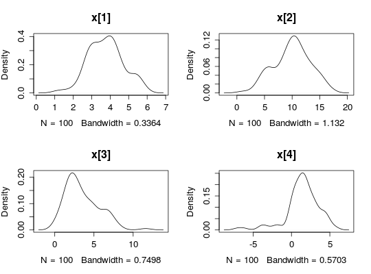
par(mfrow = c(2, 2))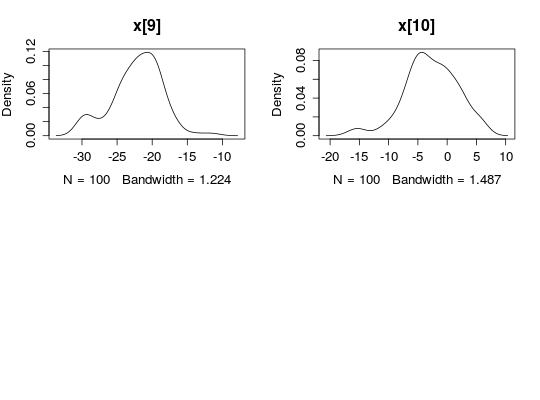
biips_hist(out_pimh$x)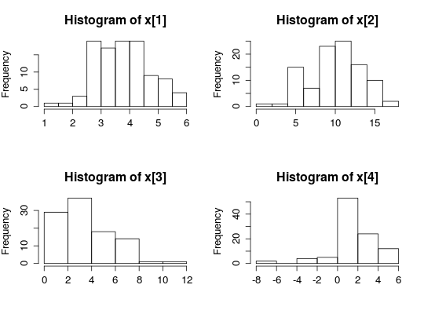
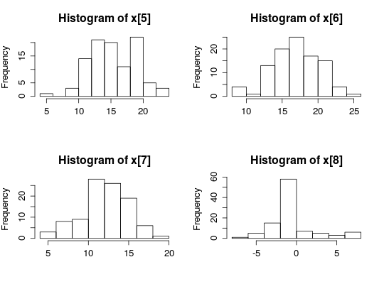
is.mcmcarray(out_pimh[['c[2:10]']])[1] TRUEout_pimh[['c[2:10]']]mcmcarray: $mode [1] 1 1 1 2 1 1 2 2 2 Marginalizing over: iteration(100)summ_pimh_c <- biips_summary(out_pimh[['c[2:10]']]) summ_pimh_cmcmcarray: $mode [1] 1 1 1 2 1 1 2 2 2 Marginalizing over: iteration(100)table_pimh_c <- biips_table(out_pimh[['c[2:10]']]) par(mfrow = c(2, 2))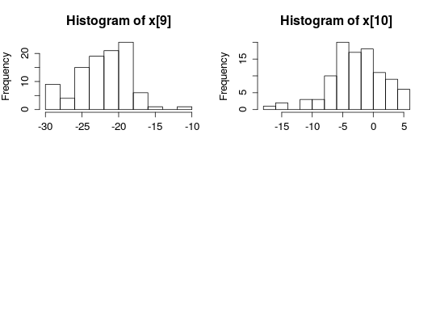
plot(table_pimh_c)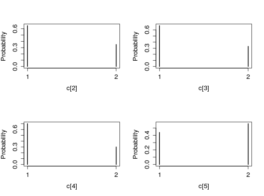
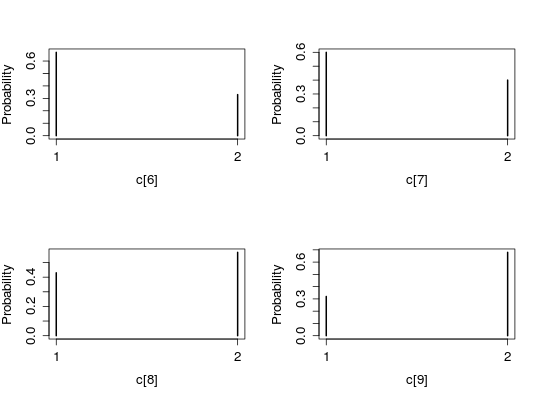
#' # PMMH algorithm data <- list(tmax = 10, p = c(.5, .5), logtau_true = log(1)) model <- biips_model(modelfile, data)* Parsing model in: /home/adrien-alea/workspace/biips-git/Rbiips/inst/extdata/hmm.bug * Compiling data graph Declaring variables Resolving undeclared variables Allocating nodes Graph size: 168 Sampling data Reading data back into data table * Compiling model graph Declaring variables Resolving undeclared variables Allocating nodes Graph size: 180n_part <- 50 obj_pmmh <- biips_pmmh_init(model, 'logtau', latent_names = c('x', 'c[2:10]'), inits = list(logtau = -2)) # Initialize* Initializing PMMHout_pmmh_burn <- biips_pmmh_update(obj_pmmh, 100, n_part) # Burn-in* Adapting PMMH with 50 particles |--------------------------------------------------| 100% |++++++++++++++++++++++++++++++++++++++++++++++++++| 100 iterations in 0.47 sout_pmmh <- biips_pmmh_samples(obj_pmmh, 100, n_part, thin = 1) # Samples* Generating 100 PMMH samples with 50 particles |--------------------------------------------------| 100% |**************************************************| 100 iterations in 0.45 s#' Manipulate `mcmcarray.list` object is.mcmcarray.list(out_pmmh)[1] TRUEnames(out_pmmh)[1] "log_marg_like_pen" "logtau" "x" "c[2:10]"out_pmmhlogtau mcmcarray: $mean [1] 1.838985 Marginalizing over: iteration(100) x mcmcarray: $mean [1] 0.7139138 10.6331769 7.5971262 1.9010691 16.5068751 18.7990781 2.7335623 9.5677346 3.6704171 16.4285854 Marginalizing over: iteration(100) c[2:10] mcmcarray: $mode [1] 1 1 1 1 1 2 1 1 2 Marginalizing over: iteration(100)biips_summary(out_pmmh)logtau mcmcarray: $mean [1] 1.838985 Marginalizing over: iteration(100) x mcmcarray: $mean [1] 0.7139138 10.6331769 7.5971262 1.9010691 16.5068751 18.7990781 2.7335623 9.5677346 3.6704171 16.4285854 Marginalizing over: iteration(100) c[2:10] mcmcarray: $mode [1] 1 1 1 1 1 2 1 1 2 Marginalizing over: iteration(100)#' Manipulate `mcmcarray` object is.mcmcarray(out_pmmh$logtau)[1] TRUEout_pmmh$logtaumcmcarray: $mean [1] 1.838985 Marginalizing over: iteration(100)summ_pmmh_lt <- biips_summary(out_pmmh$logtau, order = 2, probs = c(0.025, 0.975)) dens_pmmh_lt <- biips_density(out_pmmh$logtau) par(mfrow = c(2, 1))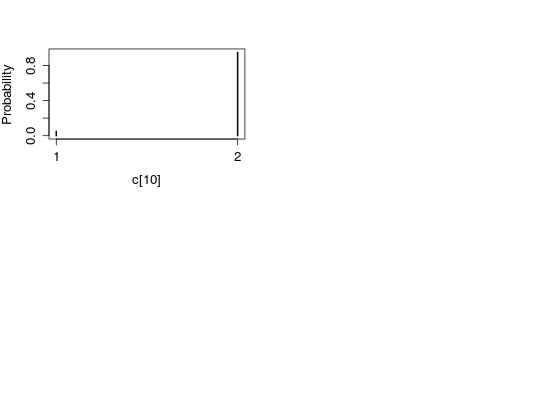
plot(dens_pmmh_lt) biips_hist(out_pmmh$logtau)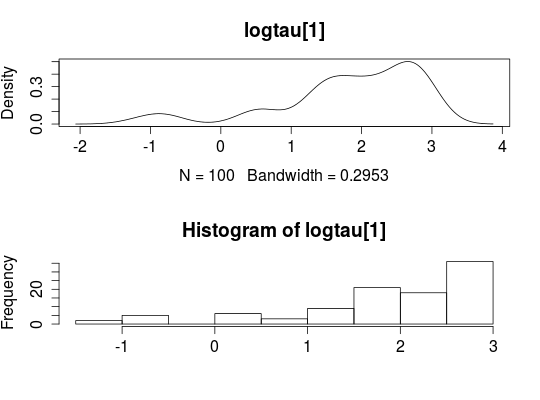
is.mcmcarray(out_pmmh$x)[1] TRUEout_pmmh$xmcmcarray: $mean [1] 0.7139138 10.6331769 7.5971262 1.9010691 16.5068751 18.7990781 2.7335623 9.5677346 3.6704171 16.4285854 Marginalizing over: iteration(100)summ_pmmh_x <- biips_summary(out_pmmh$x, order = 2, probs = c(0.025, 0.975)) dens_pmmh_x <- biips_density(out_pmmh$x) par(mfrow = c(2, 2)) plot(dens_pmmh_x)
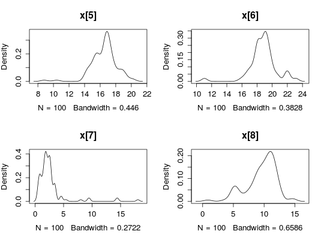
par(mfrow = c(2, 2))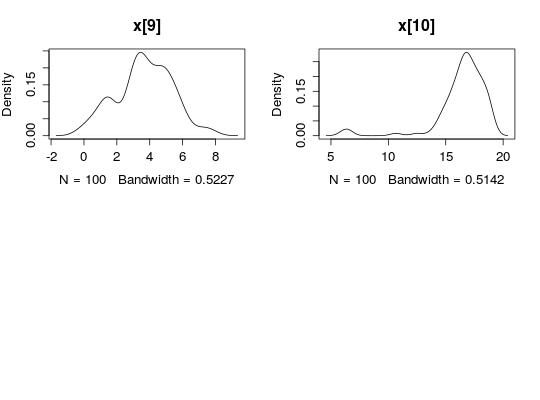
biips_hist(out_pmmh$x)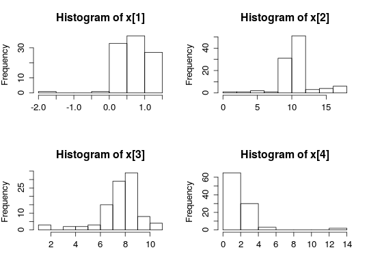
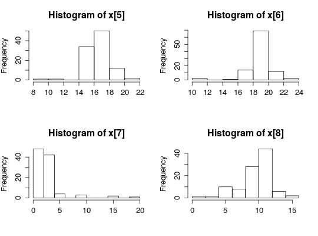
is.mcmcarray(out_pmmh[['c[2:10]']])[1] TRUEout_pmmh[['c[2:10]']]mcmcarray: $mode [1] 1 1 1 1 1 2 1 1 2 Marginalizing over: iteration(100)summ_pmmh_c <- biips_summary(out_pmmh[['c[2:10]']]) table_pmmh_c <- biips_table(out_pmmh[['c[2:10]']]) par(mfrow = c(2, 2))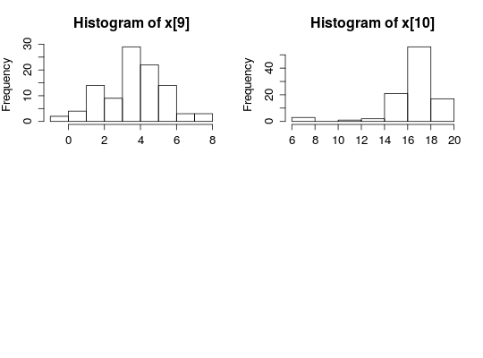
plot(table_pmmh_c)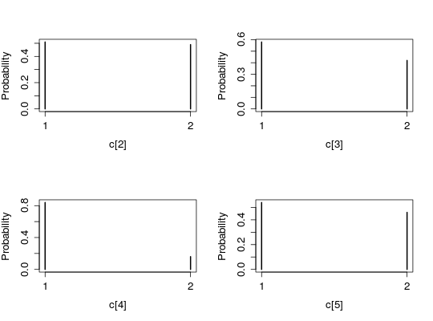
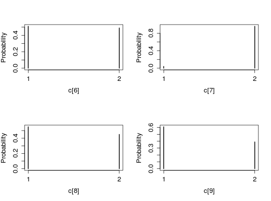


See also
density